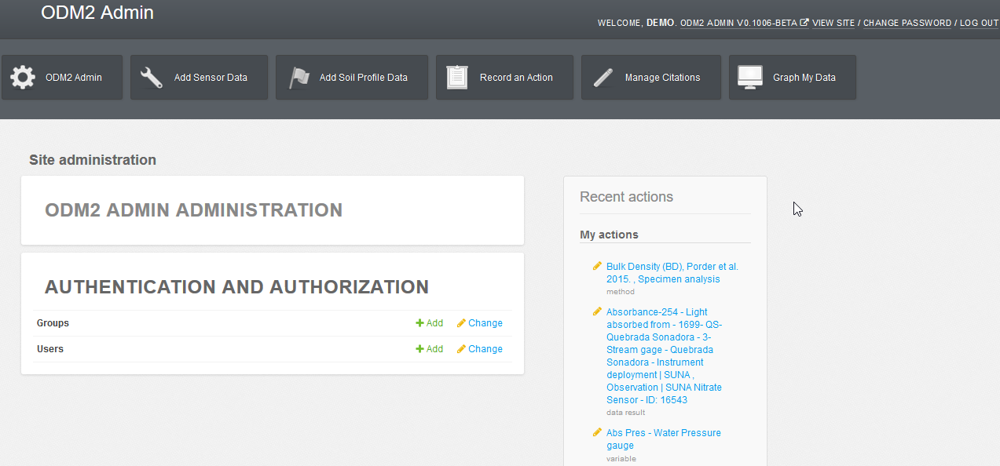

CZ Manager Walkthrough¶
Below is a tutorial which explains many of the features of CZ Manager. This tutorial was developed for the CUAHSI Tools and Services for Managing Research Data Workshop at the CUAHSI Biennial Colloquium on July 7-31-2018. It is meant as a demonstration of the capabilities of CZ Manager and as a use case for ODM2. Links contained here access a demonstartion version of CZ Manager populated with data from the Luquillo Critical Zone Observatory and hosted by CUAHSI . If you would like to access the sandbox please email leonmi@sas.upenn.edu
You can login to the sandbox here: http://odm2admin.cuahsi.org/Sandbox/
After logging in you will see the CZ Manager Home page:

This page consists of several parts, links to log out and change your password, the CZ Manager Shortcuts, CZ Manager administration, authentication and authorization, and recent actions.
CZ Manager Shortcuts¶
Upon logging into CZ Manager you will see the below navigation shortcuts across the top.

The first shortcut, displayed here as ‘CZ Manager’ with a cog icon, provides a list of all of the ODM2 pages.
The second, ‘Add Sensor Data’, provides links to where you should enter information if you are trying to add new sensor data or you want to make changes to information relavent to sensor data.
Third, ‘Add Soil Profile Data’ provides links for adding or editing Profile result data.
Fourth, ‘Record an Action’, provides links for adding or editing actions and methods ( standarized method for how to perform an action).
Fifth, Manage Citations, provides links for managing and exporting citations.
Sixth, Graph My Data, provides links for data plotting and a map of your sites.
CZ Manager site administration dashboard¶
The recent actions block of the site administration dashboard shows changes you have recently completed in CZ Manager such as adding or editing an item in the forms. In the example above we can see that a method, a data result and a variable were recently changed.
The Authentication and Authorization link will allow you to create users and groups so others can login to the system.
The CZ Manager Administration link will take you to a list of all 44 ODM2 entities that can be directly managed in CZ Manager. See the CZ Manager Forms for details about the CZ Manager Forms CZ Manager Forms.
The recent actions section shows changes you have recently completed in CZ Manager such as adding or editing an item in the forms. In the example above we can see that a method, a data result and a variable were recently changed.
The Authentication and Authorization link will allow you to create users and groups so others can login to the system.
Additional entities exist within the ODM2 information model these need to be managed with another tool Such as with the ODM2PythonAPI. Django models exist for each ODM2 entity so it is also possible to write Python scripts using the Django Object relational mapper. See The Django ORM and WOFpy for details on using the Django ORM with ODM2 databases.